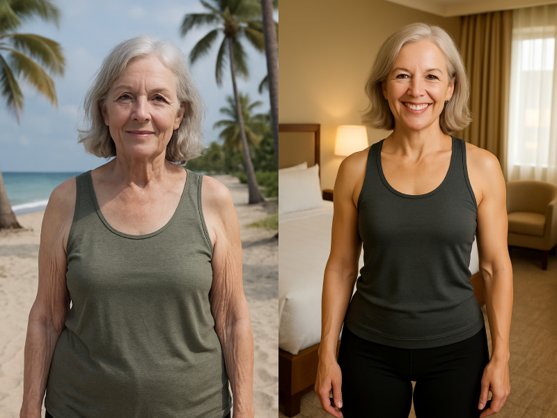
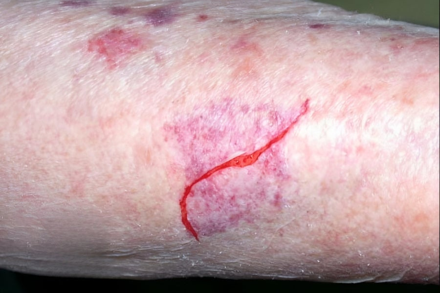
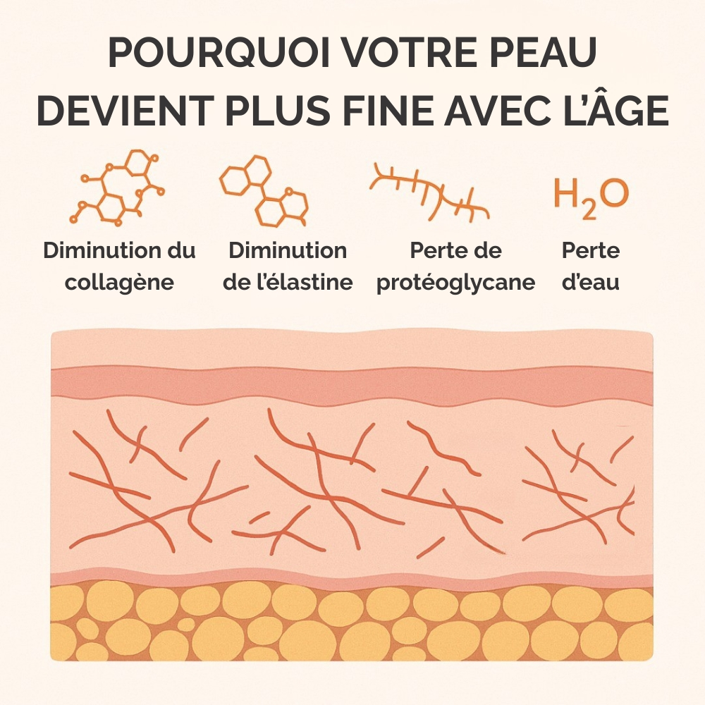
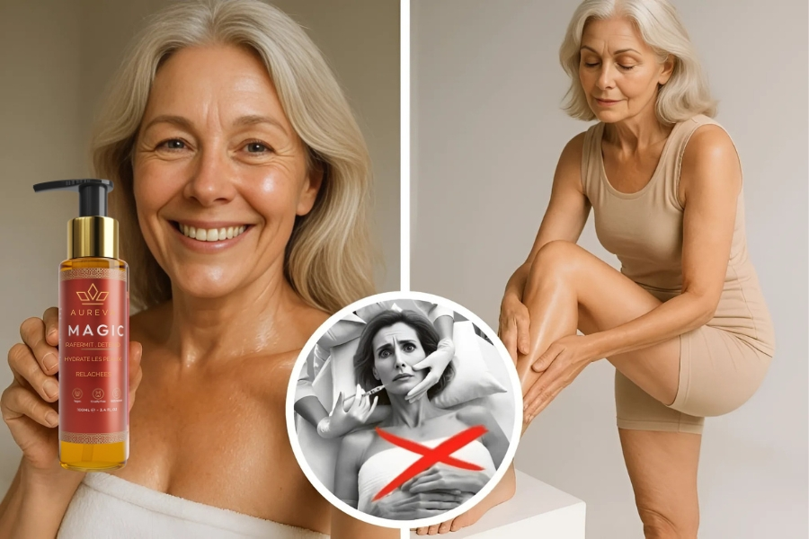

Je me souviens de la peau de ma grand-mère, si fine qu’on aurait dit du papier de soie.
Aujourd'hui, je vois cette même fragilité sur mes patientes. Et pour la première fois, je la vois dans mon miroir.
Je devais avoir sept ou huit ans la première fois que j'ai vraiment remarqué la peau de ma grand-mère. C'était une femme forte, chaleureuse et bienveillante. Mais sa peau... on aurait dit du papier de soie.
Fine, presque transparente. Je me souviens de voir les petits vaisseaux sanguins juste en dessous, de voir comment le moindre petit choc pouvait laisser des bleus.
À l'époque, je me disais : "C'est juste à ça que ressemble la peau d'une personne âgée."
Mais aujourd'hui, des décennies plus tard — en tant que médecin et en tant que femme de plus de 50 ans — je comprends exactement ce que cela signifiait.
Et je commence à voir la même chose m'arriver.
Garantie de satisfaction de 60 jours
Lorsque votre Aureva Magic arrivera chez vous, vous aurez 60 jours pour constater ses effets transformateurs. Si vous n'êtes pas satisfaite à 100%, faites-le nous savoir et nous vous rembourserons intégralement.
Si on la laisse sans soin, la peau vieillissante peut devenir si fragile... qu'elle se déchire à la moindre petite bosse.
Voici à quoi ressemble une peau amincie et fragilisée lorsqu'on laisse le phénomène s'installer.
En tant que médecin spécialiste de la santé de la peau, j'ai passé plus de 20 ans à étudier le lien entre les changements hormonaux, la perte de collagène et ce que nous appelons la "peau créponnée" ou "peau fripée".
Ce qui me surprend le plus ? La vitesse à laquelle tout peut basculer.
"Tout allait bien... et puis un jour, mes bras étaient juste différents. Relâchés. Plissés. Comme si ma peau ne m'appartenait plus."
La vérité, c'est que ça n'arrive pas en une nuit — mais c'est tout comme. Les premiers signes apparaissent souvent après la ménopause, après une perte de poids rapide, ou même juste après une année stressante.
Ça commence par une petite perte d'éclat... puis la peau devient plus fine, plus sèche, plus fragile. Soudain, votre reflet n'est plus vraiment vous.
Et ce que la plupart des femmes ne réalisent pas ? Il ne s'agit pas seulement de rides. La peau vieillissante devient plus fine, plus faible et plus fragile. Même de légers chocs peuvent laisser des bleus. Un simple pansement peut déchirer la peau.
J'ai des patientes qui me confient : "Ce n'est pas seulement que ma peau est vieille — elle est devenue délicate."
Qu'est-ce qu'une peau fine — et pourquoi est-ce si important ?
Une peau qui s'affine est le signal d'alarme de votre corps qui vous dit :
"J'ai perdu ma protection naturelle."
Médicalement parlant, la peau s'amincit lorsque le collagène et l'élastine — les protéines structurelles qui gardent la peau ferme, épaisse et résiliente — commencent à se dégrader. Résultat : la peau devient plus faible, plus transparente et beaucoup moins capable de se protéger ou de se réparer.
Ce n'est pas qu'une question d'apparence. C'est une question de vulnérabilité.
En vieillissant — surtout après la ménopause — la barrière cutanée s'amincit de façon spectaculaire. En fait, des études montrent que les femmes peuvent perdre jusqu'à 30% du collagène de leur peau dans les cinq années qui suivent la ménopause.
Et quand cela arrive :
- Les bleus mettent plus de temps à disparaître
- Les égratignures et les déchirures surviennent plus facilement
- Les plaies cicatrisent plus lentement
- Et le quotidien — du simple fait de s'habiller à celui de se cogner contre une table — commence à paraître risqué.
C'est pour cette raison que tant de femmes disent ne plus reconnaître leur propre peau. Avoir la peau fine, c'est plus que "simplement vieillir".
Ce n'est pas un problème cosmétique — c'est la conséquence médicale d'un épuisement du collagène et de l'élastine. Et les conséquences apparaissent rapidement :
- La peau devient délicate et prend un aspect de papier
- Elle se déchire ou se meurtrit facilement, même sous une légère pression
- Elle cicatrise plus lentement, ce qui peut entraîner des infections ou des cicatrices
- Elle commence à se relâcher et à se rider plus profondément, surtout sur les bras, les jambes, le décolleté et les mains
Et pourtant, la plupart des femmes ne sont jamais prévenues. Elles pensent que ça fait juste partie du "vieillissement". Elles se reprochent d'être fragiles ou maladroites.
C'est ce que ma mère pensait aussi.
Mais elle ne savait pas ce que nous savons aujourd'hui — et elle n'avait pas accès à ce que nous avons.
Je ne suis pas seulement médecin — je suis une femme qui a vu sa propre peau changer.
Il y a quelques années, j'ai commencé à voir les signes moi-même : la peau de mon décolleté était plus fine. Mes bras paraissaient un peu plus lâches sur les photos. Mes cuisses semblaient moins fermes. Aucune crème ne semblait y changer quoi que ce soit.
Comme la plupart des femmes, je n'étais pas intéressée par les injections, les traitements douloureux ou la chirurgie.
Je voulais quelque chose de sûr, de naturel et d'authentique — mais assez puissant pour faire une différence visible.
C'est pourquoi j'ai commencé à travailler avec une équipe de chimistes, de dermatologues et de biologistes cellulaires pour développer une formule topique qui pourrait réellement agir sur la peau fripée et relâchée — et la protéger pour que ça n'empire pas.
La Solution ? Aureva Magic

La plupart des crèmes se concentrent sur l'hydratation. Mais quand les fondations de la peau s'effondrent, il faut plus que de l'humidité. Il vous faut quelque chose qui imite ce que le corps ne produit plus : un soutien au collagène, une réparation structurelle et une véritable élasticité.
C'est précisément la mission que nous avons donnée à Aureva Magic.
Une huile corporelle profondément réparatrice, validée par la science, qui :
- Améliore la fermeté de la peau jusqu'à 98% en 24 heures
- Lisse visiblement l'aspect "peau fripée" sur les bras, les jambes, le décolleté et le ventre
- Stimule le collagène et l'élasticité à chaque application
- Est légère, pénètre rapidement et ne laisse aucun résidu gras
Ce n'est pas seulement cosmétique. Elle aide à renforcer la structure de la peau — pour que votre peau devienne non seulement plus douce, mais aussi plus forte et plus résistante.
Pourquoi je l'utilise tous les jours — et la recommande à chaque femme que je rencontre.
Le but n'est pas de paraître à nouveau 30 ans. C'est de se sentir confiante à 60 ans, bien dans sa peau et en sécurité dans son corps.
Parce que vieillir ne devrait pas être synonyme de fragilité. Et avoir la peau fripée ne devrait pas vous obliger à vous cacher.
J'ai été la première à la tester. Puis, 30 femmes de mon cabinet, âgées de 50 à 80 ans, l'ont utilisée. Leurs retours ont été presque immédiats :
"Ma peau n'a pas été aussi douce et confortable depuis des années."
"Mes bras ressemblent à ceux que j'avais dans la quarantaine."
"Ma petite-fille l'a remarqué et m'a dit : 'Mamie, tes jambes sont toutes brillantes !'"
Plus de 90% d'entre elles ont rapporté une peau plus ferme, plus rebondie et mieux hydratée en une semaine seulement. Certaines ont même pleuré en se regardant dans le miroir.
Parce qu'il ne s'agit pas seulement de la peau. Il s'agit de la façon dont vous vous sentez dans votre propre corps.
"Si ce produit avait existé du vivant de ma grand-mère... je sais qu'elle aurait remis ses robes sans manches préférées."
– Dr. Sofia Clark
Retrouvez votre force, votre douceur et votre confiance — en toute sécurité, naturellement, et en quelques jours seulement.
Offre limitée pour nos lectrices : Commandez 2 flacons et recevez-en 1 GRATUIT. Uniquement disponible ici. Uniquement pour les 200 premières clientes.
Commentaires
Chloé Dubois Quelqu'un a déjà essayé ? Je suis absolument ravie !
Léa Fournier La meilleure huile pour le corps que j'aie jamais utilisée, sans hésiter. Les résultats sont incroyables !
Manon Girard Je viens de recevoir mon colis... super excitée de l'essayer ! Le flacon est magnifique et semble très luxueux.
Lucas Martin Ma femme m'a convaincu d'essayer - les hommes aussi ont besoin de soins corporels ! Cette huile change vraiment la donne pour mon "dad bod" !
Camille Lefebvre Au début, j'étais sceptique... j'ai acheté une bouteille et WOW. Ça vaut chaque centime. J'ai essayé tellement de produits mais rien n'a rendu ma peau aussi ferme qu'Aureva Magic.
Alice Moreau Ma petite-fille a insisté pour que j'essaie Aureva Magic. Je suis absolument impressionnée par les résultats !
Louise Petit OMG, n'est-ce pas ?! J'étais si soulagée qu'ils aient encore du stock aujourd'hui. J'ai pris deux bouteilles avant qu'elles ne soient à nouveau épuisées !
Jeanne Richard Je viens de passer ma commande. Hâte de la recevoir - merci à tous pour les avis honnêtes !